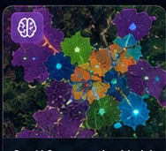
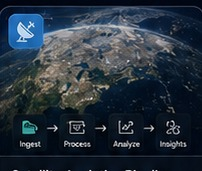
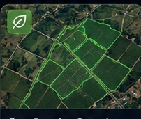
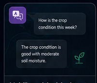

DEEP LEARNING · SEGMENTATION
GeoAI Segmentation Models
Pixel-level Earth-observation understanding with tiled inference and GIS outputs.
BUILDING INTELLIGENCE FOR THE PHYSICAL WORLD
I work across GIS, earth observation, computer vision, deep learning, cloud APIs and LLM-powered systems to turn complex spatial data into usable intelligence.
SELECTED CAPABILITIES

Pixel-level Earth-observation understanding with tiled inference and GIS outputs.
Bi-temporal imagery comparison for locating and quantifying spatial change.
Temporal feature engineering, phenology summaries and anomaly detection.
Grounded retrieval with deterministic spatial tools and structured context.
Explicit planner, validator and analysis stages with an inspectable execution trace.
Config-first experiments, quality gates, hashes and release manifests.
STAC-style metadata filtering and deterministic overlapping raster windows.

Modular boundaries for acquisition, preprocessing, inference and delivery.

An imagery-to-vector design for extracting and refining agricultural field boundaries.
A product architecture for joining field geometry, imagery indices and temporal signals.

A system design for natural-language access to retrieved context and spatial tools.
PUBLIC CODE
Linked directly to the public repositories on @tushar2159.
PyTorch · segmentation · config-driven training & evaluation
PyTorch · detection · IoU/NMS · end-to-end pipeline
Bi-temporal EO · normalization · change masks · tests
NDVI · temporal summaries · robust anomaly analytics
Grounded retrieval · spatial tool routing · structured outputs
Quality gates · release manifests · reproducibility · CI
STAC-style filters · quality controls · deterministic tiling
Planner · validator · tool execution · orchestration patterns
PyTorch · residual CNN · inference & CI
FastAPI · model router · validation · serving contracts
ENGINEERING PRINCIPLES
How I approach production-oriented GeoAI and AI systems.
Tunable behavior belongs in explicit configuration rather than hidden constants.
Data preparation, model settings and release metadata should make experiments repeatable.
CRS, geometry, raster alignment, topology and spatial contracts are treated as first-class validation concerns.
Data ingestion, models, post-processing, retrieval, tools and serving layers remain independently replaceable.
Unit tests, contracts and validation checks protect critical model and data behavior.
Analytical capabilities should integrate cleanly with products through documented service boundaries.
Model artifacts, configuration and code versions should be traceable across releases.
TECHNOLOGY STACK